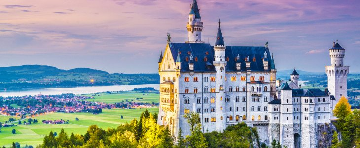
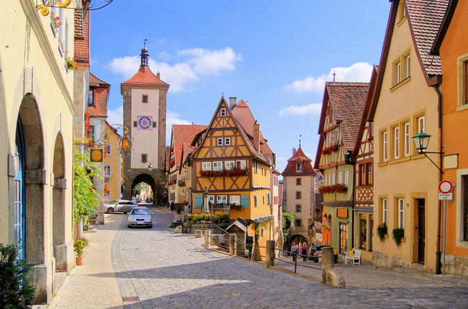
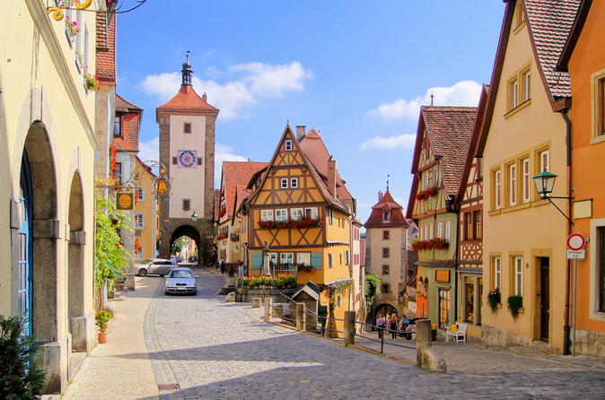
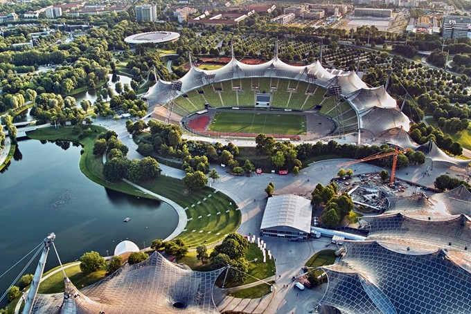
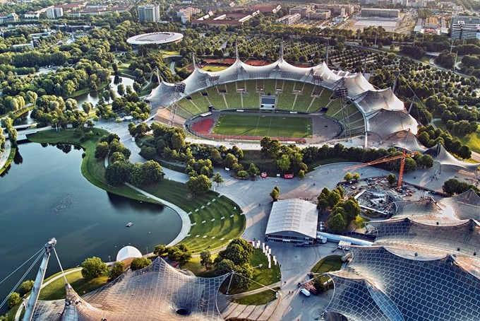

München
Willkommen in München
München ist die drittgrößte Stadt Deutschlands und eines der meistbesuchten Ziele für eine Städtereise in Europa. Es ist eine bedeutende Industrie- und Finanzmetropole mit überdurchschnittlich hoher Kaufkraft. Die hohe Lebensqualität in der Stadt ergibt sich auch durch die Nähe zu den Alpen und den vielen Freizeitmöglichkeiten in der Natur. Bei gutem Blick kann man von der Stadt die Berge sehen. Für einen Urlaub in München sind insbesondere die vielen Sehenswürdigkeiten und das umfassende Kulturangebot interessant.
München hat ein warmgemäßigtes Klima mit relativ kalten und schneereichen Wintern. Die beste Reisezeit für München hängt davon ab, was Sie unternehmen möchten. Für viele Reisende sind die Sommermonate die optimale Reisezeit für München, weil man dann viel draußen unternehmen kann.
Besonders viele Sehenswürdigkeiten auf engstem Raum sowie gute Einkaufsmöglichkeiten findet man in der Altstadt im Herzen von München. Im benachbarten Lehel spaziert man zwischen schön restaurierten Häusern in der Nähe des Englischen Gartens. Wer zwischen wohlhabenden Münchnern nahe des berühmten Schlosses und vielen Grünflächen wohnen möchte, sollte ein Hotel in den Stadteilen Nymphenburg und Neuhausen buchen. In Glockenbach und Haidhausen findet man ein reges Nachtleben mit vielen Clubs, Cafés, Designern und der Schwulenszene.
Sehenswertes vor Ort
-
Olympiapark
Weltweites Beispiel für revolutionäre zeitgenössische Architektur ist der Münchner Olympiapark geworden. Nachdem die Stadt den Zuschlag für die Spiele 1972 bekommen hatte, beschloss die Kommune, das Motto "Fröhliche Spiele" bereits beim Bau der Sportstätten umzusetzen. Das Architektenbüro Behnisch und Partner setzte auf das archaische Prinzip der Zeltkonstruktion. Und so entstand auf dem knapp 3 km2 großen Gelände des einstigen königlich-bayerischen Exerzierfelds am Oberwiesenfeld ein kühnes Nebeneinander von in sich geschlossenen Dachlinien, die überragt werden vom 291 m hohen Olympiaturm. Herzstück des Parks ist das 80.000 Besucher fassende Olympiastadion. 50 m bergauf geht es zum Olympiaberg. Zu den Highlights des Olympiaparks zählt die zweistündige Zeltdachtour. Im Theatron am Olympiasee finden im Sommer kostenlose Rock- und Pop-Konzerte statt. Wer sich von Promis Anekdoten aus der Geschichte der Sportstätte erzählen lassen will, leiht sich einen MP3-Player aus. Etwas versteckt im südlichen Park steht die Ost-West-Friedenskirche, die der russische Eremit Väterchen Timofei in den 1950er-Jahren aus Kriegsschutt errichtete. Heute ist das ungewöhnliche Gotteshaus ein Museum.
-
Deutsches Museum
Vermutlich würden nicht einmal drei Wochen genügen, um im Deutschen Museum alles zu sehen. Mit 55.000 m² Ausstellungsfläche und rund 17.000 Objekten zählt es zu den größten technisch-naturwissenschaftlichen Museen der Welt. Die Bestände des 1903 von Oskar von Miller gegründeten Museums werden laufend ergänzt und mit Exponaten der neuesten technischen Entwicklungen versehen. So findet sich in der Mammutshow auf der Isarinsel alles, was den Menschen in Sachen Technik bislang eingefallen ist. Einige Tipps für Nichttechnikfreaks: Zu den Attraktionen gehören im Untergeschoss das naturalistisch installierte Bergwerk, weiter die Luft- und Schifffahrtshallen sowie der Faradaykäfig in der Starkstromtechnik. Für einen Besuch des Zeiss-Planetariums sollte man sich Zeit nehmen. Das Deutsche Museum hat zusätzlich 1992 die Flugwerft Schleißheim eingerichtet. Von Otto Lilienthals Normal-Segelapparat aus der Frühzeit der Luftfahrt über Senkrechtsstarter und Hubschrauber bis zu einer 30 m hohen Europa Rakete von 1971 lässt sich hier die Entwicklung moderner Fluggeräte nachvollziehen. An einem Flugsimulator kann man zudem selbst Erfahrungen sammeln.
-
Residenz
Eine schier unfassbare Pracht bietet sich den Besuchern, weshalb man für den Besuch im größten Innenstadtschloss Deutschlands mindestens einen ganzen Tag einplanen sollte. Nach den Zerstörungen des Zweiten Weltkriegs wurden Abermillionen in die Restaurierung der "Herzkammer Bayerns" gesteckt, die ein halbes Jahrtausend Sitz der Herrscher war und nun wieder im alten Glanz erstrahlt. Alle architektonischen Spielarten, die die Kultur Bayerns geprägt haben, findet man hier: strenge Renaissance, überbordendes Barock, verspieltes Rokoko und geradlinigen Klassizismus. 1385 wurde der Grundstein für die Neuveste im Nordosten der alten Stadt gelegt. Über die Jahrhunderte entstand Schritt für Schritt die Residenz, bestehend aus drei Hauptkomplexen und sechs Innenhöfen.
-
Pinakothek der Moderne
Der Star unter Münchens Kunsthäusern: Das von Stefan Braunfels entworfene Haus entstand mit der Idee, selbst ein architektonisches Kunstwerk zu sein und so der Kunst ein adäquates Zuhause zu geben (auch wenn manche von einer "Schuhschachtel" sprechen). Vier große Sammlungen des Freistaats und eine Reihe privater Schenkungen sind hier untergebracht, so die Staatsgalerie Moderner Kunst mit Werken der Blauen Reiter bis Beuys. Auf mehr als 12.000 m2 werden die wichtigsten künstlerischen Entwicklungen von Malerei, Grafik, Design und Architektur des 20. und 21. Jhs. gezeigt.
-
Olympiaturm
Von Süden nach Norden erstreckt sich diese riesige Gartenanlage über beinahe 5 km und wird nur am Kleinhesseloher See vom Isarring durchtrennt. Kurfürst Karl Theodor, der schon den Hofgarten der Öffentlichkeit zugänglich machte, veranlasste 1789 die Umgestaltung von Militärgärten in Volksgärten, für die Erholung sowohl seiner Soldaten als auch der normalen Bürger. Mit der Ausführung des damals in Europa einmaligen Projekts wurde der Hofgärtner Friedrich Ludwig von Sckell beauftragt. Am besten lässt sich das knapp 78 km lange Wegenetz durch Münchens "grüne Lunge" per Fahrrad erkunden.
-
Englischer Garten
Von Süden nach Norden erstreckt sich diese riesige Gartenanlage über beinahe 5 km und wird nur am Kleinhesseloher See vom Isarring durchtrennt. Kurfürst Karl Theodor, der schon den Hofgarten der Öffentlichkeit zugänglich machte, veranlasste 1789 die Umgestaltung von Militärgärten in Volksgärten, für die Erholung sowohl seiner Soldaten als auch der normalen Bürger. Mit der Ausführung des damals in Europa einmaligen Projekts wurde der Hofgärtner Friedrich Ludwig von Sckell beauftragt. Am besten lässt sich das knapp 78 km lange Wegenetz durch Münchens "grüne Lunge" per Fahrrad erkunden.
-
Allianz-Arena
Der Fußballtempel zählt nicht nur zu den modernsten Stadien der Welt, sondern hat sich auch zu einer der Top-Sehenswürdigkeiten entwickelt. Wenn der FC Bayern spielt, leuchtet die Arena in Rot, beim TSV 1860 in Blau. Wer die Arena erkunden will, kann bei einer Stadionführung einen Blick in die Mannschaftsduschen werfen. In der FC Bayern Erlebniswelt lassen sich die großen Erfolge der über 100-jährigen Vereinsgeschichte noch einmal erleben. Sie ist Museum, Filmsaal, Shop und Fantreffpunkt zugleich.
-
BMW-Welt
Das weltweit einzigartige, architektonisch hochmoderne Auslieferungszentrum wurde 2007 eröffnet. Besucher werden hier auf mehreren Ebenen durch die größte dauerhafte BMW Automobil-Präsentation geführt. Neuste Technologien und Visionen werden multimedial sehr anschaulich dargestellt, so dass nicht nur die Herzen technikbegeisterter Besucher höher schlagen. Neuwagenbesitzer bekommen ihr neues Auto auf einer beleuchteten Drehscheibe überreicht. Hier erlebt man die Marke BMW mit allen Sinnen!
Entdecken Sie die Schönheit Münchens

 



 
